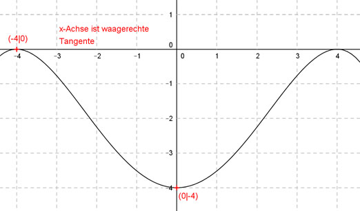

Aufgabe 86 Der Graph einer achsensymmetrischen ganzrationalen Funktion 4. Grades geht durch den Punkt (0|-4) und hat in (-4|0) eine waagerechte Tangente. Wie lautet seine Funktionsgleichung?  Allgemeine Form einer achsensymmetrischen ganzrationalen Funktion 4. Grades: f(x) = ax4 + cx2 + e f’(x) = 4ax3 + 2cx f’’(x) = 12ax2 + 2c 3 Bedingungen: 1. Geht durch den Punkt (0|-4) bedeutet: f(0) = -4 --> a * 04 + c * 02 + e = -4 --> e = -4 2. Hat in (-4|0) eine waagerechte Tangente bedeutet zum einen: (e = -4 eingesetzt) f(-4) = 0 --> a * (-4)4 + c * (-4)2 = 0 --> 256a + 16c - 4 = 0 I 3. Hat in (-4|0) eine waagerechte Tangente bedeutet zum anderen : f’(-4) = 0 --> 4a * (-4)3 + 2c * (-4) = 0 --> -256a- 8c = 0 II I + II 256a + 16c - 4 = 0 -256a - 8c = 0 -------------------- 8c - 4 = 0 |+4 8c = 4 |:8 c = 4/8 = 0,5 c = 0,5 in I eingesetzt: 256a + 16 * 0,5 - 4 = 0 256a + 8 - 4 = 0 256a + 4 = 0 |-4 256a = -4 |:256 a = -4/256 = -1/64 Gesuchte Funktionsgleichung: f(x) = -(1/64)x4 + 0,5x2 - 4